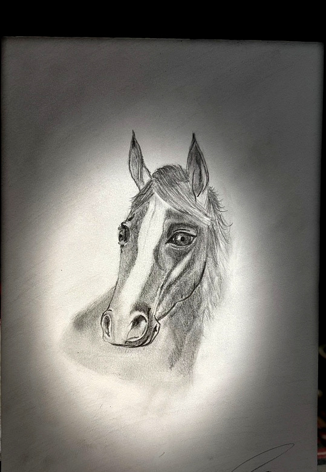
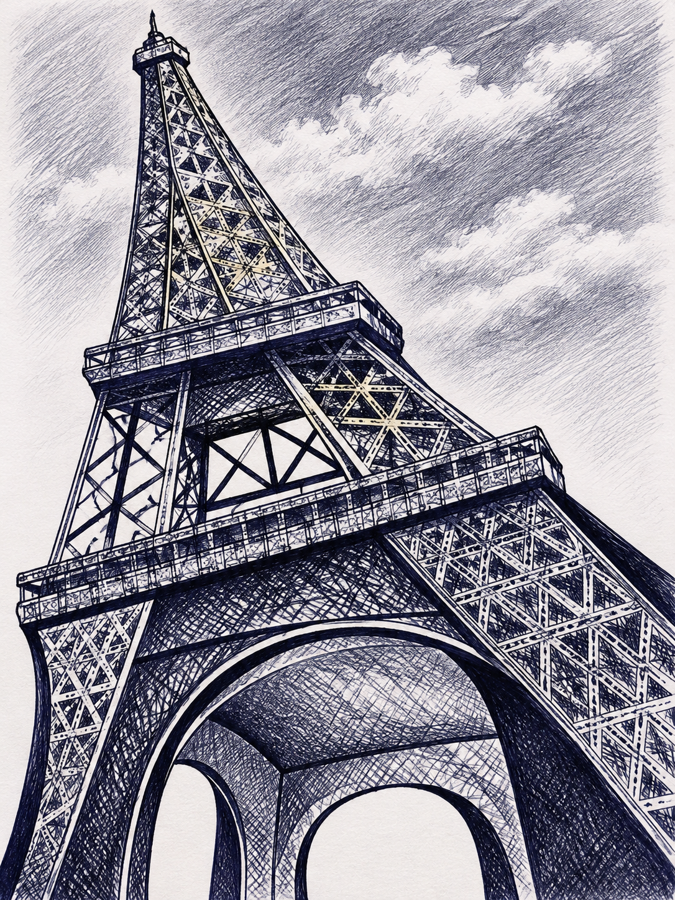
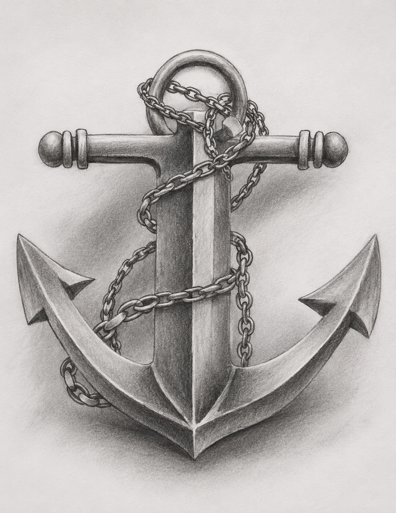
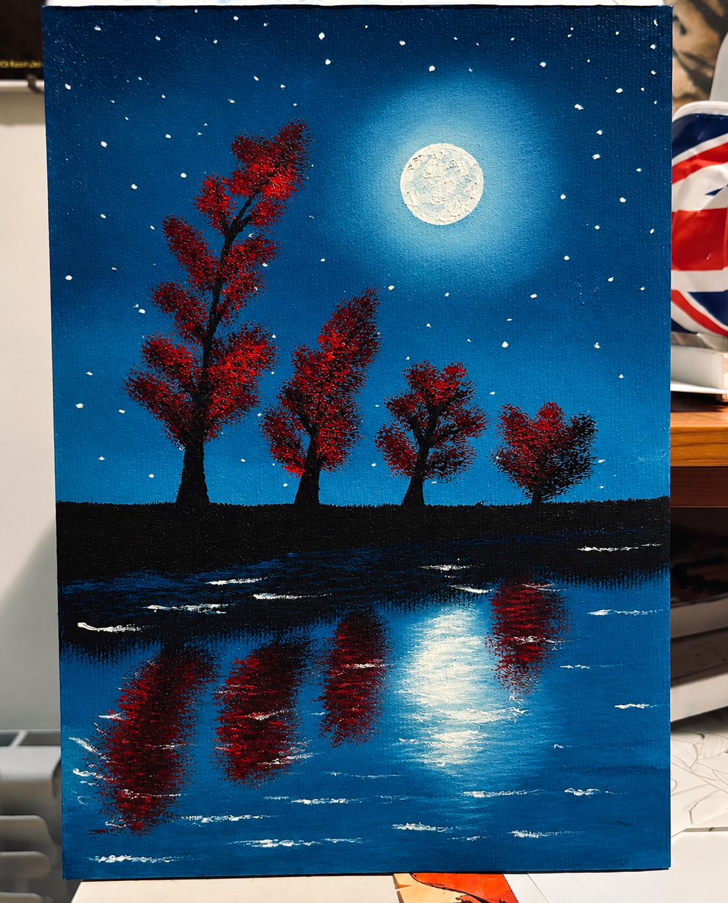

Trasformo le tue fotografie in ritratti personalizzati, disegnati a mano con passione e cura per ogni dettaglio. ❤️
Realizzo disegni a mano e ritratti.
Sono un'artista specializzata in disegni a mano e ritratti personalizzati. Ogni mia opera nasce dalla passione per l'arte e viene realizzata con cura, attenzione ai dettagli e uno stile personale.

Il Cavallo

La Torre Eiffel

L'Ancora

Il Paesaggio
1. Scegli la fotografia che desideri trasformare in un ritratto personalizzato.
2. Puoi ordinare tramite Fiverr, visitare il mio negozio Ko-fi oppure contattarmi via email.
3. Raccontami la tua idea e realizzerò il tuo ritratto a mano con cura e passione.
Ogni disegno è realizzato a mano, con cura e attenzione ai dettagli.
Creo ritratti personalizzati partendo dalle tue fotografie, per trasformare i tuoi ricordi in opere uniche.
Passione, creatività e uno stile personale rendono speciale ogni ritratto.
Puoi contattarmi via email oppure visitare i miei negozi Fiverr e Ko-fi.
Sì! Posso realizzare un ritratto personalizzato partendo dalla tua fotografia.
Il tempo di realizzazione dipende dalla complessità del disegno. Ti comunicherò i tempi prima di iniziare.
Ritratti realizzati a mano partendo dalle tue fotografie.
Il prezzo finale dipende dal servizio scelto e dai dettagli richiesti.
Contattami per maggiori informazioni o visita il mio profilo Fiverr.
Desideri un ritratto personalizzato o vuoi maggiori informazioni sui miei disegni? Scrivimi, sarò felice di aiutarti!